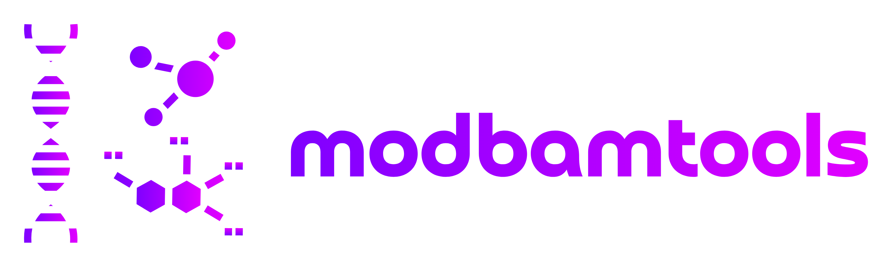

Modbamtools Documentation
modbamtools is a set of tools to manipulate and visualize DNA/RNA base modification data that are stored in bam format. htslib has included a support for parsing modified base tags from alignment files (MM and ML). These tags have provided a better/efficient way for storing modification data inside alignment files. For more information about these tags, please visit here.
For a detailed tutorial of each command, please visit tutorial page.
Generate modified base tags for your data
modbamtools is technology agnostic. However, tools tailored for analysis of modified bases using long-read technology are currently adapting to using MM/ML tags at a much higher rate. Below are the list of tools that can generate these tags to be used with modbamtools:
Oxford Nanopore Technology (ONT)
Bonito
Guppy
Nanopolish
Megalodon
Remora
Pacific Biosciences (Pacbio)
Primrose
ccsmeth
Haplotypes
modbamtools commands can parse information per haplotype based on the presence of HP tag in your modbam files. You can find some of the tools to generate this tag below:
PEPPER
WhatsHap
Clair3
LongPhase
Install
Required: Python >=3.8 , <=3.10
In a clean environment:
$ pip install modbamtoolsCommands
modbamtools plot- Plot single-read base modification data along other optional tracks (gtf, bedgraph, bigwig).modbamtools calcMeth- Calculate methylation statistics for regions in a bed file.modbamtools cluster- Perform clustering based on modification state for regions in a bed file.modbamtools calcHet- Calculate heterogeneity of modified bases for regions in a bed file.modbamtools --help- Print help message and exit.
How to cite modbamtools
If you use modbamtools in your research please cite modbamtools preprint:
https://www.biorxiv.org/content/10.1101/2022.07.07.499188v1
Acknowledgment
We would like to thank Jared Simpson and Chris Wright for their helpful comments and contributions to the development of modified base alignment files.